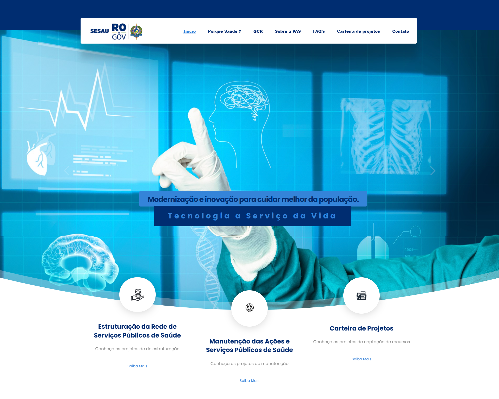
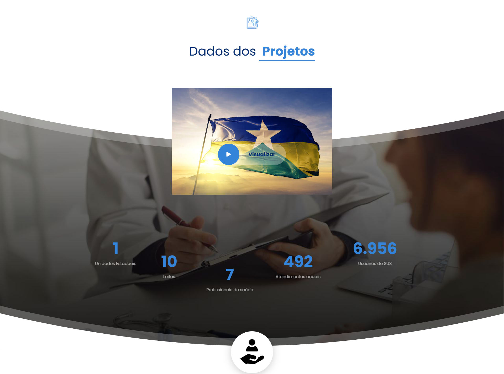
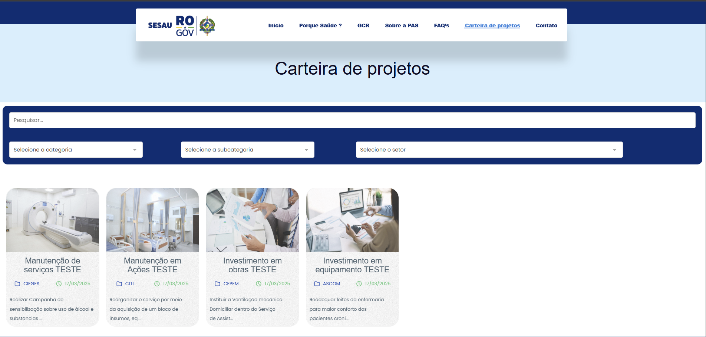

<div id="ajax-page" class="ajax-page-content">
    <div class="ajax-page-wrapper">
        <div class="ajax-page-nav">
            <div class="nav-item ajax-page-prev-next">
                <a class="ajax-page-load" href="portfolio-3.html"><i class="lnr lnr-chevron-left"></i></a>
                <a class="ajax-page-load" href="portfolio-2.html"><i class="lnr lnr-chevron-right"></i></a>
            </div>
            <div class="nav-item ajax-page-close-button">
                <a id="ajax-page-close-button" href="#"><i class="lnr lnr-cross"></i></a>
            </div>
        </div>

        <div class="ajax-page-title">
            <h1>Sistema de captação de recursos</h1>
        </div>

        <div class="row">
            <div class="col-sm-8 col-md-8 portfolio-block">                <div class="owl-carousel portfolio-page-carousel">
                    <div class="item">
                        
                    </div>
                    <div class="item">
                        
                    </div>
                    <div class="item">
                        
                    </div>
                    <div class="item">
                        
                    </div>
                </div>
                
                <!-- Lightbox Modal -->
                <div id="lightbox-modal" class="lightbox-modal">
                    <span class="lightbox-close">&times;</span>
                    
                    <div id="lightbox-caption"></div>
                    
                    <!-- Navegação do carousel no lightbox -->
                    <a class="lightbox-prev" id="lightbox-prev">&#10094;</a>
                    <a class="lightbox-next" id="lightbox-next">&#10095;</a>
                      <!-- Indicadores de posição -->
                    <div class="lightbox-indicators">
                        <span class="lightbox-dot" data-slide="0"></span>
                        <span class="lightbox-dot" data-slide="1"></span>
                        <span class="lightbox-dot" data-slide="2"></span>
                        <span class="lightbox-dot" data-slide="3"></span>
                    </div>
                </div>


                <style> 
                    body { font-family: Arial, sans-serif; line-height: 1.6; margin: 20px; padding: 20px; } 
                    h2 { padding: 30px 0px 10px 0px; } 
                    h4 { color: #02B4E0; padding: 30px 0px 7px 0px; } 
                    ul { list-style-type: disc; margin-left: 20px; }


                    /* Estilo do carrossel */
                    .carousel-image {
                        cursor: pointer;
                        transition: transform 0.3s ease;
                    }
                    
                    .carousel-image:hover {
                        transform: scale(1.05);
                    }
                    
                    /* Lightbox Modal */
                    .lightbox-modal {
                        display: none;
                        position: fixed;
                        z-index: 9999;
                        padding-top: 100px;
                        left: 0;
                        top: 0;
                        width: 100%;
                        height: 100%;
                        overflow: auto;
                        background-color: rgba(0,0,0,0.9);
                    }
                    
                    .lightbox-content {
                        margin: auto;
                        display: block;
                        width: 80%;
                        max-width: 1200px;
                        max-height: 80vh;
                        object-fit: contain;
                        animation: zoom 0.6s;
                    }
                    
                    @keyframes zoom {
                        from {transform: scale(0)} 
                        to {transform: scale(1)}
                    }
                    
                    .lightbox-close {
                        position: absolute;
                        top: 60px;
                        right: 35px;
                        color: #f1f1f1;
                        font-size: 40px;
                        font-weight: bold;
                        transition: 0.3s;
                        cursor: pointer;
                    }
                    
                    .lightbox-close:hover,
                    .lightbox-close:focus {
                        color: #bbb;
                        text-decoration: none;
                    }
                    
                    #lightbox-caption {
                        margin: auto;
                        display: block;
                        width: 80%;
                        max-width: 700px;
                        text-align: center;
                        color: #ccc;
                        padding: 10px 0;
                        height: 150px;
                    }
                    
                    /* Navegação do lightbox */
                    .lightbox-prev, .lightbox-next {
                        cursor: pointer;
                        position: absolute;
                        top: 50%;
                        width: auto;
                        margin-top: -50px;
                        padding: 16px;
                        color: white;
                        font-weight: bold;
                        font-size: 30px;
                        transition: 0.3s ease;
                        border-radius: 0 3px 3px 0;
                        user-select: none;
                        background-color: rgba(0,0,0,0.5);
                    }
                    
                    .lightbox-next {
                        right: 20px;
                        border-radius: 3px 0 0 3px;
                    }
                    
                    .lightbox-prev {
                        left: 20px;
                    }
                    
                    .lightbox-prev:hover, .lightbox-next:hover {
                        background-color: rgba(0,0,0,0.8);
                        color: #02B4E0;
                    }
                    
                    /* Indicadores */
                    .lightbox-indicators {
                        text-align: center;
                        position: absolute;
                        bottom: 30px;
                        width: 100%;
                    }
                    
                    .lightbox-dot {
                        cursor: pointer;
                        height: 15px;
                        width: 15px;
                        margin: 0 5px;
                        background-color: #bbb;
                        border-radius: 50%;
                        display: inline-block;
                        transition: background-color 0.3s ease;
                    }
                    
                    .lightbox-dot.active, .lightbox-dot:hover {
                        background-color: #02B4E0;
                    }
                    
                    @media only screen and (max-width: 700px){
                        .lightbox-content {
                            width: 100%;
                        }
                        
                        .lightbox-prev, .lightbox-next {
                            font-size: 24px;
                            padding: 12px;
                        }
                        
                        .lightbox-prev {
                            left: 10px;
                        }
                        
                        .lightbox-next {
                            right: 10px;
                        }
                    }
                </style>                <script type="text/javascript">
                    jQuery(document).ready(function($){
                        $('.portfolio-page-carousel').imagesLoaded(function(){
                            $('.portfolio-page-carousel').owlCarousel({
                                smartSpeed:1200,
                                items: 1,
                                loop: true,
                                dots: true,
                                nav: true,
                                navText: false,
                                margin: 10,
                                autoHeight:true
                            });
                        });
                          // Array com as informações das imagens
                        var images = [
                            {
                                src: "./img/portfolio/captacaoRecursos/cap-recursos-01.png",
                                alt: "Portal Captação de Recursos - Página Inicial"
                            },
                            {
                                src: "./img/portfolio/captacaoRecursos/cap-recursos-02.png",
                                alt: "Portal Captação de Recursos - Dados do Projeto"
                            },
                            {
                                src: "./img/portfolio/captacaoRecursos/cap-recursos-03.png ",
                                alt: "Portal Captação de Recursos - Programas e assistências"
                            },
                            {
                                src: "./img/portfolio/captacaoRecursos/cap-recursos-04.png",
                                alt: "Portal Captação de Recursos - Carteira de Projetos"
                            }
                        ];
                        
                        var currentSlide = 0;
                        var modal = document.getElementById("lightbox-modal");
                        var modalImg = document.getElementById("lightbox-img");
                        var captionText = document.getElementById("lightbox-caption");
                        var span = document.getElementsByClassName("lightbox-close")[0];
                        var prevBtn = document.getElementById("lightbox-prev");
                        var nextBtn = document.getElementById("lightbox-next");
                        var dots = document.getElementsByClassName("lightbox-dot");
                        
                        // Função para mostrar slide específico
                        function showSlide(n) {
                            if (n >= images.length) { currentSlide = 0; }
                            if (n < 0) { currentSlide = images.length - 1; }
                            
                            modalImg.src = images[currentSlide].src;
                            captionText.innerHTML = images[currentSlide].alt;
                            
                            // Atualizar indicadores
                            for (var i = 0; i < dots.length; i++) {
                                dots[i].classList.remove("active");
                            }
                            dots[currentSlide].classList.add("active");
                        }                        // Adicionar evento de clique para cada imagem do carrossel
                        $('.carousel-image').click(function(){
                            // Pegar o índice diretamente do atributo data-index
                            var clickedIndex = parseInt($(this).attr('data-index'));
                            currentSlide = clickedIndex;
                            modal.style.display = "block";
                            showSlide(currentSlide);
                        });
                        
                        // Navegação anterior
                        prevBtn.onclick = function() {
                            currentSlide--;
                            showSlide(currentSlide);
                        }
                        
                        // Navegação próxima
                        nextBtn.onclick = function() {
                            currentSlide++;
                            showSlide(currentSlide);
                        }
                        
                        // Clique nos indicadores
                        for (var i = 0; i < dots.length; i++) {
                            dots[i].onclick = function() {
                                currentSlide = parseInt(this.getAttribute("data-slide"));
                                showSlide(currentSlide);
                            }
                        }
                        
                        // Fechar modal ao clicar no X
                        span.onclick = function() { 
                            modal.style.display = "none";
                        }
                        
                        // Fechar modal ao clicar fora da imagem (mas não nos controles)
                        modal.onclick = function(event) {
                            if (event.target == modal) {
                                modal.style.display = "none";
                            }
                        }
                        
                        // Navegação com teclado
                        document.addEventListener('keydown', function(event) {
                            if (modal.style.display === "block") {
                                if (event.key === 'Escape') {
                                    modal.style.display = "none";
                                } else if (event.key === 'ArrowLeft') {
                                    currentSlide--;
                                    showSlide(currentSlide);
                                } else if (event.key === 'ArrowRight') {
                                    currentSlide++;
                                    showSlide(currentSlide);
                                }
                            }
                        });
                    });
                </script>
            </div>

            <div class="col-sm-4 col-md-4 portfolio-block">
                <!-- Project Description -->
                <div class="project-description">
                    <div class="block-title">
                        <h3>Descrição</h3>
                    </div>
                    <ul class="project-general-info">
                        <li><p><i class="fa fa-user"></i>Gabriel Porto</p></li>
                        <li><p><i class="fa fa-globe"></i> <a href="#" target="_blank">Não publicado</a></p></li>
                        <li><p><i class="fa fa-wrench"></i> Em Desenvolvimento</p></li>
                        <li><p><i class="fa fa-calendar"></i> Março, 2025</p></li>
                    </ul>

                    <p class="text-justify">O site de Captação de Recursos  é uma plataforma desenvolvida para gerenciar e monitorar recursos financeiros destinados a projetos e iniciativas voltadas à saúde pública, garantindo transparência e eficiência na alocação dos fundos . 
                        Sua principal função é facilitar a identificação de oportunidades de captação, como editais de financiamento, parcerias com agentes públicos e programas de custeio de ações</p>
                    <!-- /Project Description -->

                    <!-- Technology -->
                    <div class="tags-block">
                        <div class="block-title">
                            <h3>Tecnologias usadas</h3>
                        </div>
                        <ul class="tags">
                            <li><a>HTML5</a></li>
                            <li><a>CSS3</a></li>
                            <li><a>PHP</a></li>
                            <li><a>Wordpress</a></li>

                        </ul>
                    </div>
                    <!-- /Technology -->
                </div>
                
                 
            </div>


            <!-- Project Description -->
            <div class="container">
            <h2>Tarefas Desenvolvidas no sistema de Captação de Recursos</h2>
            
            <h4>Desenvolvimento em WordPress</h4>
            <ul>
                <li>Criação de uma plataforma intuitiva e escalável utilizando WordPress, explorando temas personalizados e plugins especializados (ex: formulários de captação, gestão de editais) para alinhar-se às estratégias de financiamento público e privado.</li> 
                <li>Implementação de funcionalidades como seções de Editais, Parcerias e Controle de Recursos, priorizando navegação simplificada para gestores e interessados em oportunidades de financiamento.</li> 
                <li>Domínio de técnicas de versionamento com Git para gerenciamento de atualizações e colaboração em equipe multidisciplinar.</li> 
            </ul>
            
            <h4>Otimização para SEO e Performance</h4>
            <ul>
                <li>Aplicação de estratégias de SEO on-page (meta tags, URLs amigáveis).</li> 
                <li>Otimização de performance com compressão de imagens, lazy loading e uso de CDN, garantindo carregamento rápido mesmo em conexões lentas.</li> 
            </ul>
                
            
            <h4>Aprendizados e Experiência Profissional Adquiridos</h4>
            <ul>
                <li>Domínio avançado de WordPress, incluindo customização de temas, integração com APIs externas (ex: plataformas de editais) e uso de frameworks como Elementor para agilidade no desenvolvimento.</li> 
                <li>Resolução de desafios técnicos, como ajuste de layouts para navegadores antigos e otimização de recursos para usuários com baixa conectividade.</li> 
                <li>Colaboração com gestores e equipes multidisciplinares para traduzir necessidades de captação em funcionalidades tecnológicas, utilizando metodologias ágeis e ferramentas como Trello para gestão de projetos.</li> 
            </ul>
            
            <h4>Habilidades Técnicas Destacadas</h4>
            <ul>
                <li>WordPress (temas customizados, plugins)</li>
                <li>SEO On-Page e Otimização de Performance</li>
                <li>JetEngine Plugin</li>
                <li>Elementor Plugin</li>
                <li>Segurança em Plataformas de Captação de Recursos</li>
                <li>Trabalho em Equipe Multidisciplinar</li>
                <li>Governança Digital e Conformidade Legal</li>
            </ul>
            
            <h4>Resultado</h4>
            <p>Um portal moderno e funcional, que centraliza oportunidades de captação de recursos para projetos de saúde pública, facilitando acesso a editais, parcerias e controle financeiro. A plataforma impulsiona a eficiência na gestão de fundos e apoia decisões baseadas em transparência, contribuindo para a sustentabilidade de iniciativas sociais e públicas.</p> 
        </div>
        </div>
        
    </div>
</div>
